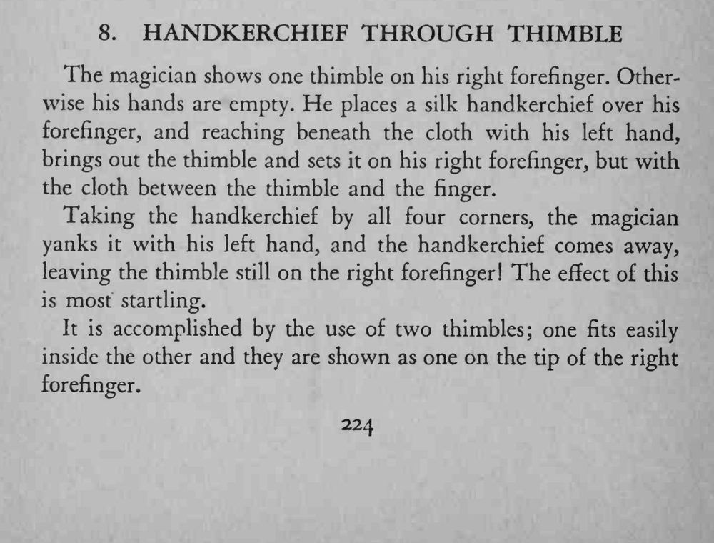
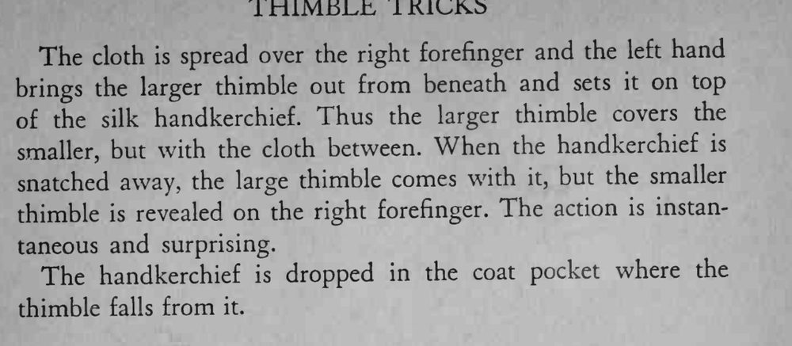

拇指套戴在右手食指上，用手帕包住手指再取出拇指套套回去；抓住四角一拽，手帕拉走，拇指套却仍戴在食指上。
外拇指套要顺着丝帕滑上，拽手帕时动作要快，拇指套才像被布带走。


The magician shows one thimble on his right forefinger. Otherwise his hands are empty. He places a silk handkerchief over his forefinger, and reaching beneath the cloth with his left hand, brings out the thimble and sets it on his right forefinger, but with the cloth between the thimble and the finger. Taking the handkerchief by all four corners, the magician yanks it with his left hand, and the handkerchief comes away, leaving the thimble still on the right forefinger! The effect of this is most startling. It is accomplished by the use of two thimbles; one fits easily inside the other and they are shown as one on the tip of the right forefinger. The cloth is spread over the right forefinger and the left hand brings the larger thimble out from beneath and sets it on top of the silk handkerchief. Thus the larger thimble covers the smaller, but with the cloth between. When the handkerchief is snatched away, the large thimble comes with it, but the smaller thimble is revealed on the right forefinger. The action is instantaneous and surprising. The handkerchief is dropped in the coat pocket where the thimble falls from it.